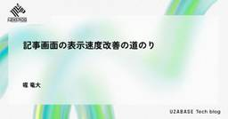
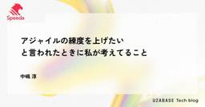
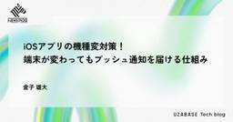
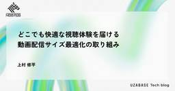
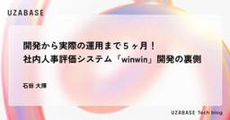

Uzabase for Engineers
https://tech.uzabase.com/
スピーダ, NewsPicksなどを開発するユーザベースのTech Blog & エンジニア採用サイト
フィード

記事画面の表示速度改善の道のり
Uzabase for Engineers
この記事は NewsPicks Advent Calendar 2025 の9日目の記事です。 ソーシャル経済メディア「NewsPicks」のエンジニアの堀です。 今回の記事では、今年プロダクトチームを横断して取り組んできたアプリにおける記事画面の表示速度改善について紹介したいと思います。 また、この記事を通してNewsPicksというプロダクトが色々なチームの協力のもと日々進化しているということが伝われば良いなと思います。 表示速度の重要性 どれだけ速くなったのか 取込記事のネイティブUI対応 APIのスリム化 APIの分割および先読み 4. おわりに 表示速度の重要性 Webサイトやアプリ…
1日前

アジャイルの練度を上げたいと言われたときに私が考えてること
Uzabase for Engineers
はじめに 本記事は、Uzabase Advent Calendar 2025 12日目の記事です。 書こうと思ったきっかけと目的 ユーザベースに入社してから5年目になりました。 入ってから2〜3年くらいはスクラムとXPの違いは何か、フルタイムのペアプロや計画づくりが難しいということで右往左往していました。 アジャイルについて造詣の深いメンバーが多く在籍しているおかげもあり、最近はようやくアジャイルについて多少理解できてきました。 そうなったときに「アジャイルがもっと上手くなるにはどうしたらいいのでしょうか」という相談を受けることが増えてきました。 そのたびに私は「プラクティスを忠実に実践するこ…
2日前

iOSアプリの機種変対策！端末が変わってもプッシュ通知を届ける仕組み
Uzabase for Engineers
この記事は NewsPicks Advent Calendar 2025 の12日目の記事です。 ソーシャル経済メディア「NewsPicks」でiOSエンジニアをしている金子です。 NewsPicks iOSアプリにて、最近ちょっとユニークな取り組みをしてみました。 例年、新型iPhoneが発売された後の時期にアクティブユーザが減っていく傾向にあることがわかっています。 NewsPicksではプッシュ通知をトリガーにしてアプリを起動してくれるユーザ（逆に言うとあまり能動的には起動しないユーザ）が一定数いるのですが、機種変更によってこうしたユーザがアプリを起動しなくなり、結果としてアクティブユー…
3日前

どこでも快適な視聴体験を届ける動画配信サイズ最適化の取り組み
Uzabase for Engineers
この記事は NewsPicks Advent Calendar 2025 の8日目の記事です。 前回はプリンシパルエンジニアのむとうさんによる最も妥当な実装を選択せよでした。 はじめに こんにちは、ソーシャル経済メディア「NewsPicks」のエンジニアの上村です。 NewsPicksではオリジナル動画コンテンツを配信しておりほぼ毎日新しいコンテンツが出ています。 ユーザーからの「動画が重くて再生できない」「ダウンロードサイズが大きすぎる」といった声を受けて、動画配信サイズの最適化に取り組みました。 ユーザーレビューでは以下のような指摘が継続的に寄せられていました。 ストリーミング再生しようと…
5日前

開発から実際の運用まで５ヶ月！ 社内人事評価システム「winwin」開発の裏側
Uzabase for Engineers
はじめに こんにちは。ユーザベースのCorporate Engineering組織でソフトウェアエンジニアをしている石田です。私たちのチームは、社内向けシステムの開発を担当しています。 この記事では、ユーザベースの新しい社内人事評価システム「winwin（ウィンウィン）」について、どのような経緯で評価システムの内製化にいたったのか、実際の開発はどうだったのかの舞台裏をお伝えします。 2025年9月のPodcastで話した内容をもと書いていますので、音声で聞きたい方はぜひこちらを聞いてみてください。 tech.uzabase.com 1. なぜ自社開発を選んだのか？ リプレイスの背景にあった2つ…
5日前

ポジティブフィードバックでチームを強くする
Uzabase for Engineers
本記事は、Uzabase Advent Calendar 20257日目の記事です。 他にも面白い記事がたくさんあるので、ぜひ読んでください！ 年末ということで明るい話がいいなと思い、「みんなのフィードバック大全」 1 という書籍を読んだので、特にポジティブフィードバック（以下PFB）について、その内容と読んだ感想をまとめていきます。 ポジティブフィードバックの目的 まず、ポジティブフィードバックを実践する目的は大きく分けて二つあります。 相手のため PFBの最大の目的は、相手の成長です。 好ましい行動の強化： いつも明るい人に「今日も明るくて元気いっぱいでいいね」と伝えることで、その行動を定…
7日前

最も妥当な実装を選択せよ
Uzabase for Engineers
こんにちは。ソーシャル経済メディア「NewsPicks」プリンシパルエンジニアのむとうです。 システムを作っていると、動いた時に「楽しい！」と感じることでしょう。しかし、動かすことで満足してしまってとりあえず動くだけの実装を行ったことが後で問題となった経験、ありますよね。 AI時代だからこそ、動くだけのコードやガチャを回して終わりではなく深く理解した上での妥当な実装を選択することが必要です。JavaScriptで配列の比較を行うという小さな例を題材に、どうすればいいかを計測とコードで見ていきましょう。 一つ一つの決断の質を高めることが、あなたのエンジニアとしての評価、ひいてはあなたが関わるプロ…
8日前
リリースラッシュの裏側で地道に積み重ねてきたコスト最適化施策を振り返る
Uzabase for Engineers
こんにちは。ソーシャル経済メディア「NewsPicks」のSREチームの飯野です。 2025年はNewsPicksの使い方が変わるような機能が立て続けにリリースされた一年でした。 3月：BookPicks NewsPicks カイゼン報告 2025.3.26 5月：コメントタイムライン NewsPicks カイゼン報告 2025.5.27 6月：番組フォロー、記者フォロー NewsPicks カイゼン報告 2025.6.24 7月：「業界ウォッチ」タブ、オリジナル記事のAI読み上げ NewsPicks カイゼン報告 2025.7.29 10月：プレミアム会員向けにNewsPicks Learn…
9日前
Meet UB Tech #62「ユーザベースのプロダクトのデザインと開発のクオリティを守る、Speeda デザインシステム に迫る！」を公開しました
Uzabase for Engineers
こんにちは、Uzabaseの角岡です。 ユーザベースのエンジニアカルチャーをゆるっとお伝えするPodcast、Meet UB Tech。 #62のテーマは、「ユーザベースのプロダクトのデザインと開発のクオリティを守る、Speeda デザインシステムに迫る！」です。 今回は、Speeda デザインシステムのデザイン・開発に携わっている奥田さん・沖さんをゲストにお迎えし、 デザインシステムの開発環境や今後についてお話を伺いました。 #62 の聞きどころはこちら。 タイトル： ユーザベースのプロダクトのデザインと開発のクオリティを守る、Speeda デザインシステム に迫る！ 出演者： 奥田 葉月 …
9日前
エンジニアリングの「汎化」、クリエイティブの「部分最適」、その間で考えたこと
Uzabase for Engineers
この記事は NewsPicks Advent Calendar 2025 の3日目の記事です。 昨日はQAエンジニアの西園さんによる AI活用事例から考える、QAエンジニアこそAIを使うべき理由 #キャリア - Qiita でした。 はじめに ソーシャル経済メディア「NewsPicks」のエンジニアの三嶋です。現在は NewsPicks Brand Design の事業に関わっています。 今回は、NewsPicks Stage. という、経済・ビジネス情報に特化した独自番組を動画配信するプロダクトに関わっていた時の話です。 「全員がコンテンツクリエイター」を掲げながら「プロダクトもコンテンツの…
11日前
Claude Code を活用した Helm Chart PR レビュー 〜実運用までの試行錯誤の記録〜
Uzabase for Engineers
こんにちは。株式会社ユーザベース エキスパート事業「NewsPicks Expert」の開発をしている長島です。 NewsPicks Expert では、インフラ基盤に Kubernetes、パッケージマネージャに Helm を採用しています。 私たちのチームでは、Helm のアップデート作業における情報収集&更新可否をまるっと AI に任せられないかと試行錯誤しており、それがある程度形になってきたため、本記事にてその実装過程と得られた知見について共有したいと思います。 はじめに - 導入前の課題と導入に至った背景 Claude Code でレビュー自動化への道のり まずはスラッシュコマンドの…
1ヶ月前
Meet UB Tech #61「Speeda AI Agentの開発秘話を大公開！」を公開しました
Uzabase for Engineers
こんにちは、Uzabaseの角岡です。 ユーザベースのエンジニアカルチャーをゆるっとお伝えするPodcast、Meet UB Tech。 #61のテーマは、「Speeda AI Agentの開発秘話を大公開！」です。 今回は、今年リリースされたSpeeda AI Agentの開発に携わった渡邉さん、平野さん、都築さんをゲストにお迎えし 構想から開発までのお話を伺いました。 open.spotify.com #61 の聞きどころはこちら。 タイトル： Speeda AI Agentの開発秘話を大公開！ 出演者： 渡邉 臣 @Sicut_study（スピーダ事業 ソフトウェアエンジニア） 平野 友…
1ヶ月前
表からの情報抽出評価を簡便に行う方法
Uzabase for Engineers
はじめに こんにちは！ 株式会社ユーザベース スピーダ事業の飯田です。 普段はベクトル検索用の埋め込みモデルの学習・提供するAPIの構築およびローカルLLMの推進を行っています。 今回は、画像やPdfの表から情報抽出に関するTipsを紹介します。 主にGeminiを活用して行ったのですが、行名・列名の揺れが発生したため精度検証で困難に直面しました。その際、行名・列名を先に抽出し、その後に値を抽出するという方法を用いることで、精度検証をコスパよく行えました。現場レベルで簡便な精度検証が必要という場合によいと感じたため紹介します。 タスク概要 表からの情報抽出は、Pdfや画像の表に記載されている情…
1ヶ月前
複雑すぎるシステムを再設計して開発時間を大幅に短縮した！
Uzabase for Engineers
こんにちは、ソーシャル経済メディア「NewsPicks」のプラットフォームエンジニアリングチームの崔（ちぇ）です。前回の記事で、複雑になりすぎたシステムをシンプルにするための設計をしてみたというお話をしました。 tech.uzabase.com 今回は、その続編として、実装を進めてみて浮上した課題をどのように解決し、結果的にどれほど便利なものになったのかについてお話ししようと思います。 結論を先に共有しますと、仮説通りに一ヶ月くらいかかるだろう作業が数日で完了するという快挙を果たしました！さらには、特に気にしなくても勝手にパフォーマンスが担保された形で機能開発できることも確認できました！ おさ…
2ヶ月前
Meet UB Tech #60「開発から実際の運用まで5ヶ月！社内人事システムwinwinの開発の裏側に迫る」を公開しました
Uzabase for Engineers
こんにちは、Uzabaseの角岡です。 ユーザベースのエンジニアカルチャーをゆるっとお伝えするPodcast、Meet UB Tech。 #60のテーマは、「開発から実際の運用まで5ヶ月！社内人事システムwinwinの開発の裏側に迫る」です。 今回は、winwinの開発に関わった石田さん、生駒さんをゲストにお迎えし リプレイス・自社開発に至った背景や実際の開発の裏側を語っていただきました！ open.spotify.com #60 の聞きどころはこちら。 タイトル： 開発から実際の運用まで5ヶ月！社内人事システムwinwinの開発の裏側に迫る 出演者： 石田 大揮 （Corporate Eng…
3ヶ月前
ユーザベースの社内イベント「Play AI for Kids」親子で楽しむAIワークショップを開催！
Uzabase for Engineers
こんにちは、株式会社ユーザベース(以下、ユーザベース) の佐藤です。 2025年8月23日（土）、ユーザベースの社内イベント「Play AI for Kids」を開催しました。 弊社は「エンジニアリングを起点に、誰もがビジネスを楽しめる世界の実現」を目指すテクノロジー・カンパニーです。 この想いのもと、2022年4月から「Play Engineering」プロジェクトをスタートしました。 プロジェクトの一環である「Play Engineering for Kids」は、2022年より毎年開催をしてきました。今回は、AI社会の進展を受けて「Play AI for Kids」と題し、AIを取り扱う…
3ヶ月前
新モデルの本番投入を加速せよ！機械学習パイプライン追加の学習コスト&開発工数の大幅削減を実現した基盤改善
Uzabase for Engineers
はじめに 皆さんこんにちは! ソーシャル経済メディア「NewsPicks」プロダクトエンジニアの森田 (@moritama7431) です:) 私は2024年4月に株式会社ユーザベースに新卒入社し、現在は主にNewsPicksにおける推薦機能の開発改善に携わっています。 本記事では、NewsPicksにおける推薦システムの継続的改善を加速させるために、機械学習パイプラインの新規追加の学習コストと開発工数を大幅削減させることができた基盤改善の取り組みについて共有します。 実は昨年秋に取り組んでいた内容なので、もうすぐ1年経ってしまいます。しかし将来の自分自身やチームメンバーのためにも本取り組みを…
3ヶ月前
Notion APIとZapierを活用した業務DX事例
Uzabase for Engineers
こんにちは。ソーシャル経済メディア「NewsPicks」のプラットフォームエンジニアリングチームの韓です。 普段の業務では主にNewsPicksの動画配信サービスや課金基盤システムの開発・運用を行っています。 今回はNotion APIとZapierを使って、NewsPicksの動画制作を担当しているNewsPicks Studiosの業務DXを推進した事例をご紹介します。 Notionを活用した事業部の業務DXや、Notion API・Zapier を用いたデータ連携に興味のある方は、ぜひご一読ください。 はじめに なぜ Notionで業務DXを進めたのか 従来の業務データ管理の課題 Not…
3ヶ月前
最高のタイミングで「誕生してしまった」コーポレートエンジニア組織
Uzabase for Engineers
AIコーディングツールの進化により、少人数のコーポレートエンジニア組織でも企業内システムの内製が合理的選択に。
4ヶ月前
Meet UB Tech #59「AI時代を切り拓く。ビジネスと技術の架け橋になるNewsPicksのPlatform Engineering Teamを深堀り！」を公開しました
Uzabase for Engineers
こんにちは、Uzabaseの角岡です。 ユーザベースのエンジニアカルチャーをゆるっとお伝えするPodcast、Meet UB Tech。 #59のテーマは、「AI時代を切り拓く。ビジネスと技術の架け橋になるNewsPicksのPlatform Engineering Teamを深堀り！」です。 今回は、NewsPicks組織内に今年新たに新設されたPlatform Engineering Teamに所属する崔さん・小林さんをお招きして チームの役割やそれぞれの業務内容、今後目指していきたいことを語っていただきました！ open.spotify.com #59 の聞きどころはこちら。 タイトル：…
4ヶ月前
初めての1on1コーチ体験記
Uzabase for Engineers
こんにちは。株式会社ユーザベース スピーダ事業でエンジニアをしている竹澤です。 近年、多くの企業で1on1が導入され、その重要性が注目されています。スピーダ事業では、年次やタイトルに関係なく、コーチもクライアントも行います。 今回は、私が初めて1on1のコーチを担当した7回のセッションを通じて、どのようにコーチングスキルを身につけていったかを振り返ってみたいと思います。コーチング初心者の方や、これから1on1のコーチに挑戦してみたい方の参考になれば幸いです。 なぜ1on1コーチを始めたのか？ コーチングを始めたきっかけは、以前同じチームだったメンバーからのフィードバックでした。毎回の360°フ…
4ヶ月前
ユーザベースのSalesforce構成を振り返ってみた
Uzabase for Engineers
はじめに 竹本） こんにちは、株式会社ユーザベース Biz System Management Teamの竹本（あだ名：たけたけ）です！ 僕は、ユーザベースでSalesforceを中心に周辺ツールのアドミン／デベロッパーだったり、セールス領域のシステムリードを担当しています。 今回のブログでは、同チームメンバーのしかさんと一緒に、ユーザベースのSalesforce環境の変遷をご紹介できればと考えています。 石川） こんにちは、株式会社ユーザベース Biz System Management Teamの石川（あだ名：しか）です！ たけたけと同じく、Salesforce周りのアドミン／デベロッパー…
4ヶ月前
テキストベクトル検索モデルを低リソースで学習するために
Uzabase for Engineers
はじめに こんにちは！ 株式会社ユーザベース スピーダ事業の飯田です。 普段はベクトル検索用の埋め込みモデルの学習及びデプロイを行っています。 大きなモデルを低リソースで学習する手法としてQLoRAとFSDPが広く用いられています。 この記事では、SentenceTransformersにおいてFSDP+QLoRAを行うときの注意点をご紹介します！ 特に、開発データをつかって、学習過程をモニタリングするケースについて紹介します。 前置き FSDP (Full Sharded Data Parallel) は、パラメータを各GPUで分割して保持し、順伝播・逆伝播時に必要なパラメータを一時的に集約…
4ヶ月前
GMOペイメントゲートウェイを利用し、NewsPicksのクレジットカード決済を本人認証できるようにした話
Uzabase for Engineers
NewsPicksのクレジットカード決済における本人認証対応についてご紹介します。
5ヶ月前
Meet UB Tech #58「ユーザベースのプロダクトチームが実践する、AI時代の開発事例」を公開しました
Uzabase for Engineers
こんにちは、Uzabaseの角岡です。 ユーザベースのエンジニアカルチャーをゆるっとお伝えするPodcast、Meet UB Tech。 #58のテーマは、「ユーザベースのプロダクトチームが実践する、AI時代の開発事例」です。 今回はユーザベースのプロダクトチームから朴さん・二木さん・池川さんの3名をお迎えし コーポレート・SPEEDA・NewsPicks開発におけるAI活用の裏側やエンジニアの役割の変化について伺いました。 open.spotify.com #58 の聞きどころはこちら。 タイトル： ユーザベースのプロダクトチームが実践する、AI時代の開発事例 出演者： 朴 云波 （Prod…
5ヶ月前
開発者体験を爆上げするPlatform Engineeringへの挑戦 ー 汎用化のための設計編
Uzabase for Engineers
こんにちは、ソーシャル経済メディア「NewsPicks」のプラットフォームエンジニアリングチームの崔（ちぇ）です。今年の上半期には、開発者の生産性を爆上げするため、システムの設計を根本的に見直すことにチャレンジしました。今回はそのお話ができればと思います。 もし「他社のプラットフォームエンジニアリングの事例が知りたい」「そもそもプラットフォームエンジニアリングチームは何をするチームなのか知りたい」「大きめの設計のフローが知りたい」など色々と気になっている方はぜひ読んでみてください！ ジュニアもシニアも同じ工数で安定的なシステムが作れる世界を目指す 現在の課題 あるべき姿 理想から設計してみる …
5ヶ月前
Meet UB Tech #57「CTOになってみてどう？エンジニアのキャリアの可能性について考える」を公開しました
Uzabase for Engineers
こんにちは、Uzabaseの角岡です。 ユーザベースのエンジニアカルチャーをゆるっとお伝えするPodcast、Meet UB Tech。 #57のテーマは、「CTOになってみてどう？エンジニアのキャリアの可能性について考える」です。 今回は今年1月よりNewsPicks CTOに就任した安藤さん、同じチームとして働いたこともあるイイダさんをゲストにお迎えし、 CTO就任の舞台裏や今後のエンジニアキャリアの可能性についてお話を伺いました。 open.spotify.com #57 の聞きどころはこちら。 タイトル： CTOになってみてどう？エンジニアのキャリアの可能性について考える 出演者： 安…
6ヶ月前
Meet UB Tech #56「AIネイティブカンパニーを目指す！ユーザベースの社内イベント『生成AIコンテスト』の舞台裏」を公開しました
Uzabase for Engineers
こんにちは、Uzabaseの角岡です。 ユーザベースのエンジニアカルチャーをゆるっとお伝えするPodcast、Meet UB Tech。 #56のテーマは、「AIネイティブカンパニーを目指す！ユーザベースの社内イベント『生成AIコンテスト』の舞台裏」です。 昨年開催された社内イベント「生成AIコンテスト」の審査員を務めた杉浦さん、そして受賞者の香月さんと高木さんをゲストにお迎えし、イベントの舞台裏や今後の展望についてお話を伺いました。 open.spotify.com #56 の聞きどころはこちら。 タイトル： AIネイティブカンパニーを目指す！ユーザベースの社内イベント「生成AIコンテスト」…
7ヶ月前
Stage. チームの開発を支える基盤と手法のご紹介
Uzabase for Engineers
経済ニュースプラットフォーム「NewsPicks」で NewsPicks Stage. （以降Stage.）プロダクトを開発している西です。昨年11月より Stage. の開発チームに携わっておりまして、振り返りの意味もこめて簡単にですが開発基盤と開発手法の紹介をしようと思います。 Stage. について NewsPicks Stage. （https://newspicks-stage.com） は経済・ビジネス情報に特化した動画配信サービスです。スポンサー企業と共同で業界の課題等をテーマに、主に大企業の意思決定者層向けの番組を制作して独自のプラットフォームで配信を行っています。動画をライブ…
8ヶ月前
検索失敗から学ぶUX改善の旅 ~ データドリブンなユーザー体験向上の事例をご紹介 ~
Uzabase for Engineers
こんにちは。ソーシャル経済メディア「NewsPicks」でエンジニアをしております崔（ちぇ）です。2020年に新卒入社し、去年まで主に検索システムの開発を担っておりました。今年からはより幅広い基盤改善にチャレンジしております。 今回は、今までNewsPicksの検索システムをどのように改善してきたかについてお話ししたいと思います。去年のSearch Engineering Tech Talk 2024 Springにて発表した内容をもとにしております。当時の発表は10分弱のLT枠で発表資料としてスライドしか残っておりません。そこで、より詳細な内容を記事にまとめたいと思いました。 もしご興味あり…
9ヶ月前